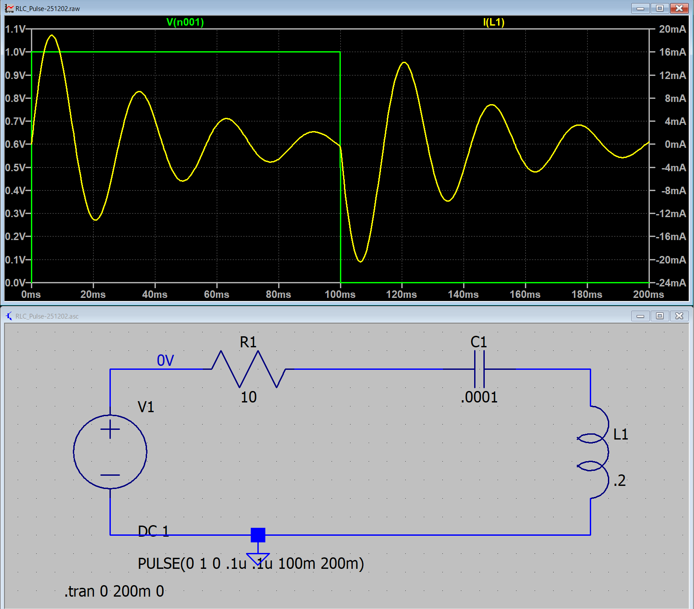
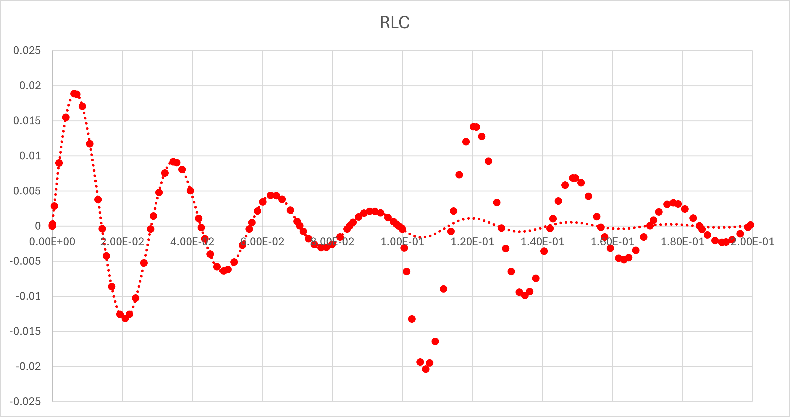

１５ー１ー０４．ステップ関数（RLC回路）
・α < ω0
平方根内が虚数となるので，
\(\Large \displaystyle \sqrt{ \alpha^2 - \omega_0^2} = j \ \sqrt{ \omega_0^2 - \alpha^2 }\equiv j \ \omega\)
とします．電流は，
\(\Large \displaystyle I(t) = e^{ - \alpha t} \cdot \left[ A \cdot e^{ j \omega t}+ B \cdot e^{ -j \omega t} \right] \)
となります．
初期条件は，ここ，に書いたように，
\(\Large I(0) = 0 \)
\(\Large \displaystyle I'(0) = \frac{V_0}{L} \)
となりますので，
\(\Large \displaystyle I(0) = e^{ - \alpha \cdot 0} \cdot \left[ A \cdot e^{ j \omega \cdot 0}+ B \cdot e^{ -j \omega \cdot 0} \right] = A + B = 0\)
\(\Large \displaystyle I'(t) = - \alpha \cdot e^{ - \alpha t} \cdot \left[ A \cdot e^{ j \omega t}+ B \cdot e^{ -j \omega t} \right] +
e^{ - \alpha t} \cdot j \ \omega \cdot \left[ A \cdot e^{ j \omega t}- B \cdot e^{ -j \omega t} \right] \)
\(\Large \displaystyle I'(0) = - \alpha \cdot e^{ - \alpha \cdot 0} \cdot \left[ A \cdot e^{ j \omega \cdot 0}+ B \cdot e^{ -j \omega \cdot 0} \right] +
e^{ - \alpha \cdot 0} \cdot j \ \omega \cdot \left[ A \cdot e^{ j \omega \cdot 0}- B \cdot e^{ -j \omega \cdot 0} \right] \)
\(\Large \displaystyle = - \alpha \cdot ( A + B) + j \ \omega \cdot ( A - B) = j \ \omega \cdot ( A - B) = \frac{V_0}{L}\)
\(\Large \displaystyle A + B =0 \)
\(\Large \displaystyle A - B = \frac{V_0}{ j \ \omega \ L}\)
から，
\(\Large \displaystyle A = \frac{1}{2} \frac{V_0}{ j \ \omega \ L}\)
\(\Large \displaystyle B = - \frac{1}{2} \frac{V_0}{ j \ \omega \ L}\)
したがって，
\(\Large \displaystyle I(t) = e^{- \alpha t} \cdot \frac{ 1}{2}\frac{V_0}{j \omega L}\left[ e^{ j \omega t} - e^{ -j \omega t} \right] \)
となります．ここで，
\(\Large \displaystyle e^{j \theta} = cos \ \theta + j \ sin \ \theta \)
\(\Large \displaystyle e^{-j \theta} = cos \ \theta - j \ sin \ \theta \)
\(\Large \displaystyle e^{j \theta} - e^{-j \theta} = 2 j \ sin \ \theta \)
なので，
\(\Large \displaystyle I(t) = \frac{V_0}{ \omega L}\cdot e^{- \alpha t} \cdot sin ( \omega t) \)
となり，減衰振動となります．
実際に，LTspice，でシミュレートしてみましょう．
V0 : 1 V
R : 10 Ω
L : 0.2 H
C : 0.0001 F
とすると，
\(\Large \displaystyle \omega_0 = \frac{1}{\sqrt{0.2 \times 0.0001} } = 223.61 \ (1/s) \)
\(\Large \displaystyle \alpha \equiv \frac{10}{2 \times 0.2} = 25 \ (1/s) \)
となり，α < ω0，の条件となります．
\(\Large \displaystyle \omega = \sqrt{ \omega_0^2 - \alpha^2 } = 222.2 (rad/s) = 35.37 Hz \)
となり，LTspiceでシミュレートすると，

となります．式と当てはめてみると，

と一致することがわかります（0 < t < t0，の範囲で）．
次は，α > ω0，の条件で計算していきましょう．